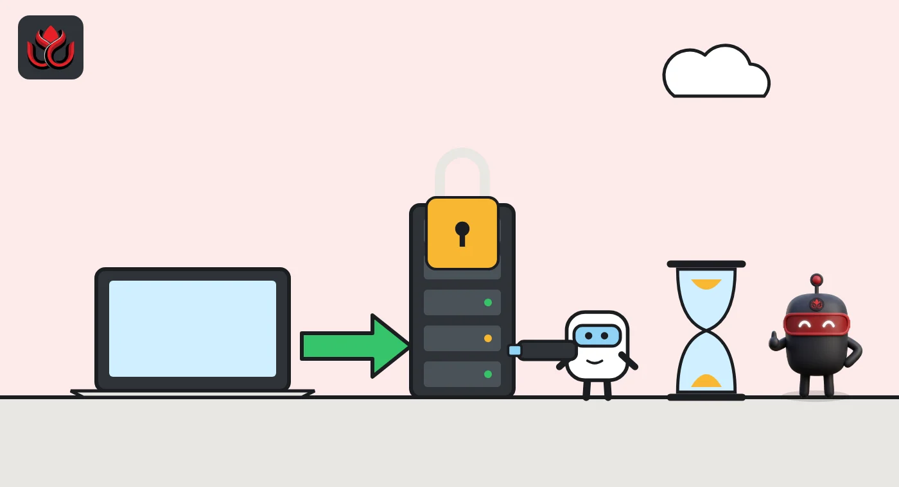
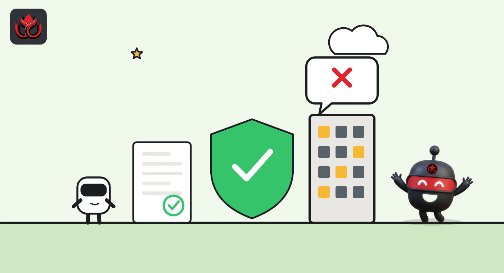

Arbitrum vote could unfreeze Stylus Rust contracts, but each needs an audit and sign-off
New Stylus contracts on Arbitrum have been frozen since October 2 over fears of AI-assisted attacks. A DAO poll closing November 5 weighs a way back: every new program would need an auditor's pass and an Arbitrum Foundation signature.
Key points
- The Arbitrum Security Council paused new Stylus activations on Arbitrum One and Nova on October 2, 2026, citing the risk of AI-assisted attacks on chain liveness.
- A Snapshot temperature check on a "Stylus Activation Contract" closes on November 5. It would restart activations on Arbitrum One only.
- Each new Stylus program would need a limited audit and a Foundation signature. The DAO could revoke that signing right by a constitutional vote.
What is on the ballot
Arbitrum DAO delegates are voting until November 5 on a plan to reopen Stylus, the feature that lets developers write Arbitrum smart contracts in languages such as Rust. New Stylus contracts have been blocked since October 2, 2026, after a Security Council emergency action. Stylus code compiles to WebAssembly (WASM), a compact code format. The Arbitrum governance forum's vote roundup lists a Snapshot temperature check on the proposal, ending November 5.
The proposal, posted on October 23 by the forum account of Offchain Labs, would create a new Stylus Activation Contract on Arbitrum One. A developer's new program would be switched on only after it passes a limited security audit and the Arbitrum Foundation issues an activation signature for it.
A Snapshot temperature check is an off-chain poll of token holders. It does not change the chain by itself. A binding on-chain constitutional vote would come later.
Why activations were paused
On a Stylus chain, deploying a contract only stores its compressed WASM code. A second step, called activation, does one-time processing so the code can run, according to Arbitrum's developer docs. Activated programs expire after 365 days by default and can be kept alive with a renewal call.
In an emergency action completed at 11:30 a.m. ET on October 2, the Security Council raised the gas needed to activate a Stylus program so high that new activations became too expensive to perform. The Foundation tied the move to AI-assisted attacks. Its concern was hand-crafted WASM programs, built outside the standard toolchain, that could slow the chain for other users.
The post said no attack found so far allowed theft of user funds and that known Stylus bugs mainly affect liveness, meaning the chain's ability to keep producing blocks. The same action added a separate guard to Arbitrum One's BoLD dispute system. Arbitrum's pause notice says existing Stylus contracts keep running and Solidity contracts are not affected.

How the activation contract would work
The contract would do the whole activation in one transaction. It checks the caller's signature, lowers the activation gas setting, activates the approved program and then restores the high setting before the transaction ends. A failed call reverts and leaves nothing open.
- Audit: an auditor from the Arbitrum Security Program rebuilds the program from the submitted code with the cargo stylus tool and confirms the bytecode matches what is deployed. The result is posted on the forum as a pass or fail.
- Signature: after a pass, a Foundation multisig signs, and the developer sends the activation transaction.
- Limits: the proposal says the check is "not a comprehensive application audit" and does not review business logic. Any new or upgraded code needs a fresh audit.
- Control: the DAO stays the sole administrator and can change or revoke the Foundation's signing right through a constitutional vote. The Foundation cannot deactivate contracts.
The plan uses features already in ArbOS 61, so no chain upgrade is needed, and it asks for no new DAO funding.
Which chains are covered
Arbitrum One is in scope. Arbitrum Nova is excluded because the DAO is minimizing that chain. Arbitrum Sepolia, the test network, would follow the same process outside this proposal, and independent Arbitrum chains are handled separately.
A vote against would not lift the Security Council pause. In other words, rejecting the plan keeps new Stylus activations frozen.

Timeline
Security Council completes emergency action pausing new Stylus activations on Arbitrum One and Nova
Constitutional AIP for a Stylus Activation Contract posted on the forum
A delegate asks for the Terms of Use, signing criteria and an appeal path before the on-chain vote
Snapshot temperature check closes
Trail of Bits audit of the activation contract, then an on-chain constitutional vote and execution
What delegates are still asking
The first public reply on the forum asked the Foundation to publish its Terms of Use before the binding vote, or at least the rules for granting or refusing signatures, a target turnaround time after a passing audit and an escalation path. The proposal says developers would request activations by email and get "reasonable efforts" turnaround with no fixed schedule. It plans to publish source code, addresses and signer setup before the on-chain vote, but the full Terms of Use only if the proposal passes.
For more on how rollups like Arbitrum are secured, see our layer 2 explainer.
LC Insight analysis
This section is our reading of the facts above, not a statement of fact.
- We think the plan swaps an open door for a gate with a guard. It brings Stylus back for serious builders, but it makes the Arbitrum Foundation a checkpoint for every new Rust contract, a real shift for a permissionless chain.
- The audit is narrow by design. Matching deployed bytecode to source catches hand-crafted WASM, the stated threat, but not ordinary app bugs. Users should not read a pass as a safety stamp.
- The likely result is a smooth Snapshot, with the harder fight saved for the on-chain vote, when delegates can weigh turnaround times and refusal rules against a slower path for builders.
What's next
- Snapshot result on November 5
- Publication of the Trail of Bits audit and contract addresses
- Whether the Foundation releases Terms of Use or signing criteria before the on-chain vote
- Date of the binding constitutional vote on Tally
Disclaimer. This article is based on public information and the sources listed below as of the update time shown. It is for information only and is not investment, legal or tax advice. Figures may change as companies and authorities publish new data.
Sources
- Arbitrum forum, [Constitutional] AIP: Stylus Activation Contract (October 23, 2026)
- Arbitrum forum, Security Council Emergency Action (October 2, 2026)
- Arbitrum forum, 2 November 2026 roundup of active and upcoming votes
- Arbitrum docs, Temporary pause on new Stylus activations
- Arbitrum docs, Stylus activation